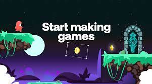

Топ 3 приложения для создания игр
Gdevelop

GDevelop — это полнофункциональное программное обеспечение для разработки игр без кода с открытым исходным кодом. Вы можете создавать игры для мобильных устройств, компьютеров и Интернета. GDevelop быстрый и простой в использовании: игровая логика построена с использованием интуитивно понятной и мощной системы, основанной на событиях.
Scratch

Скретч — визуальная событийно-ориентированная среда программирования, созданная для детей и подростков. Название произошло от слова scratching — техники, используемой хип-хоп-диджеями, которые крутят виниловые пластинки вперед-назад руками для того, чтобы смешивать музыкальные темы. Википедия
Roblox

Roblox — это платформа для создания игр, которая позволяет игрокам создавать свои собственные игры, используя собственный движок Roblox Studio. Игры кодируются в системе объектно-ориентированного программирования, использующей язык программирования Lua для управления игровой средой[9]. Пользователи могут создавать игровые продукты, представляющие собой приобретаемый контент через разовые покупки, а также микротранзакции через продукты разработчика. Разработчики на сайте обменивают Robux, заработанный на различных продуктах своих игр, на реальную валюту через систему Developer Exchange[10] и Premium Exchange. Процент доходов от покупок делится между разработчиком и Roblox[11][12]. С 1 ноября 2020 года Roblox Studio больше не поддерживается на Mac OS X 10.10[13].